Ingredientes para elaboración
-
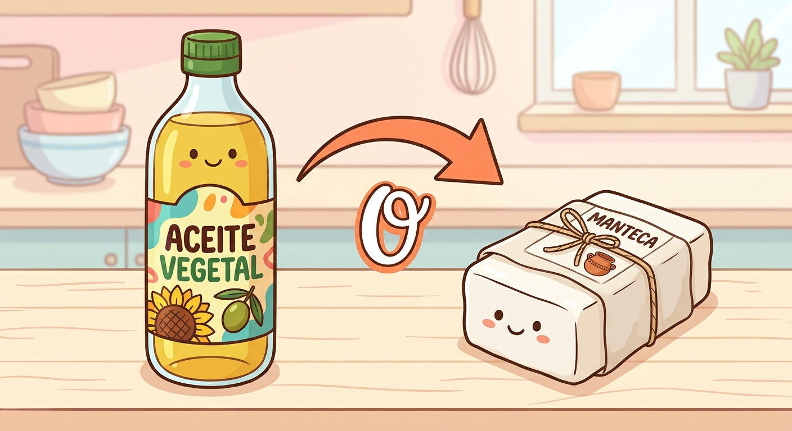
2 cucharadas de aceite vegetal o manteca -
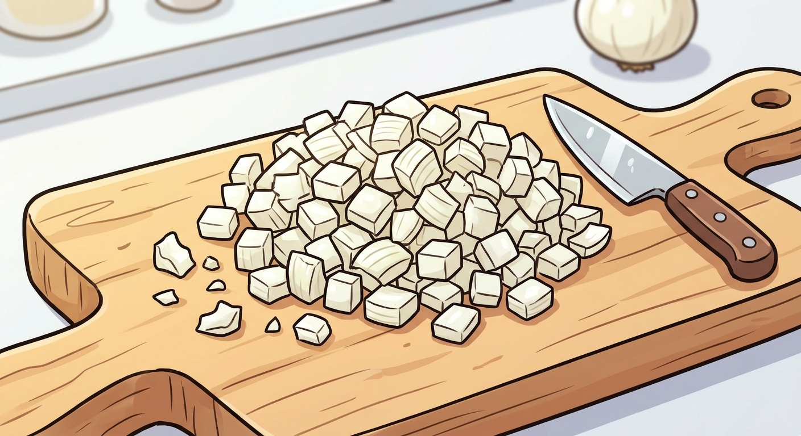
½ cebolla blanca picada -
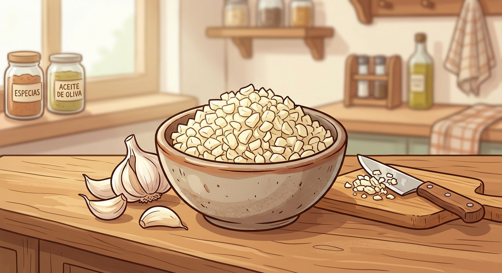
2 a 4 dientes de ajo picados -
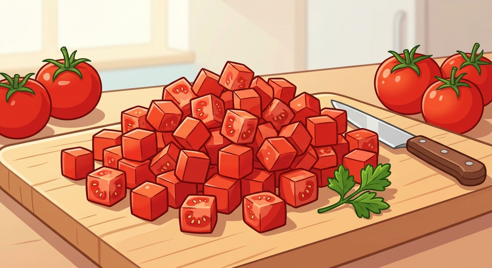
2 a 3 tomates (jitomates) en cubos -
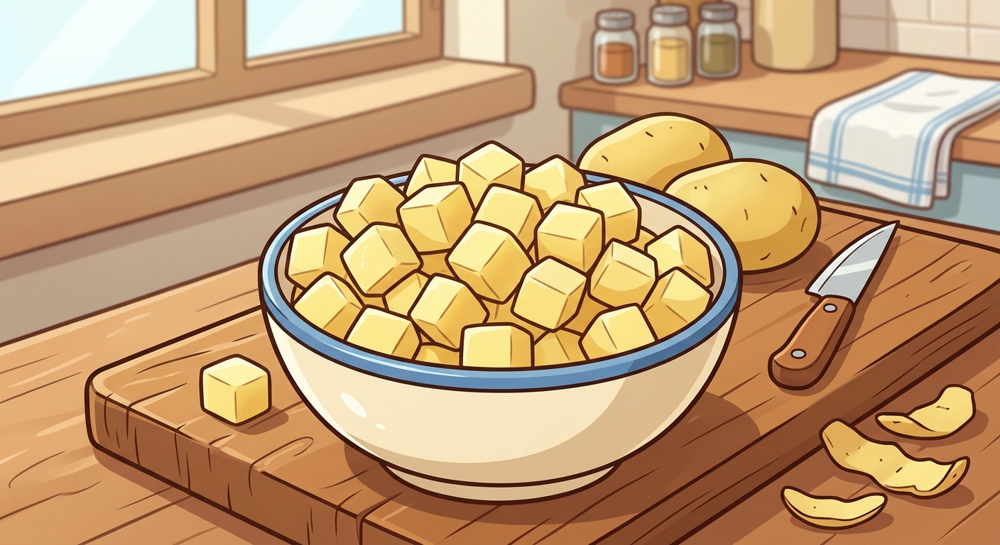
4 a 5 papas medianas peladas y en cubos -
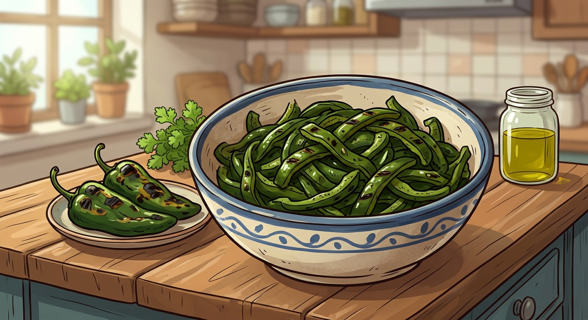
2 a 4 chiles poblanos, Anaheim o chiles verdes (tatemados, pelados y en rajas) -
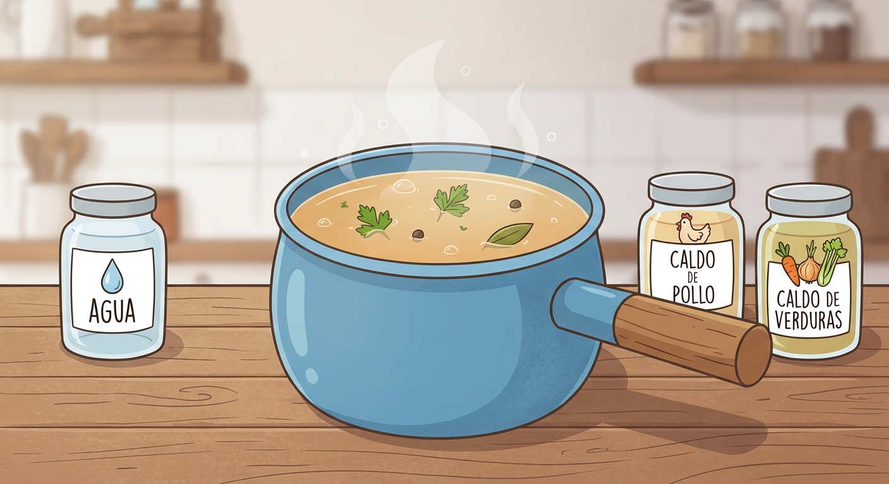
1.5 a 2 litros de agua o caldo de pollo/verduras -
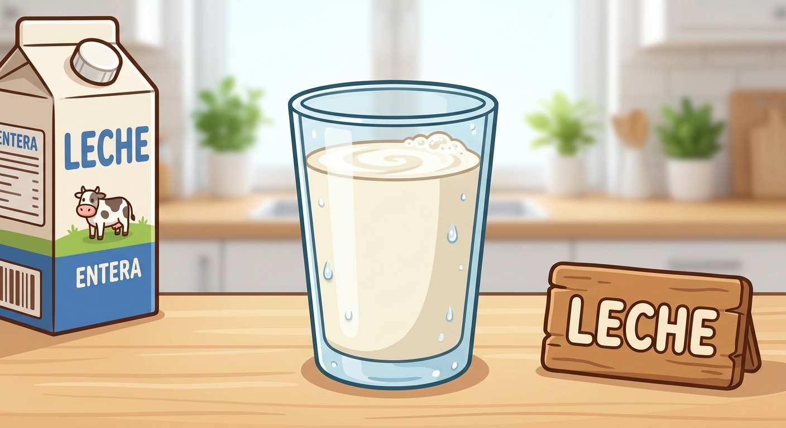
1 taza de leche (entera, evaporada o de tu preferencia) -
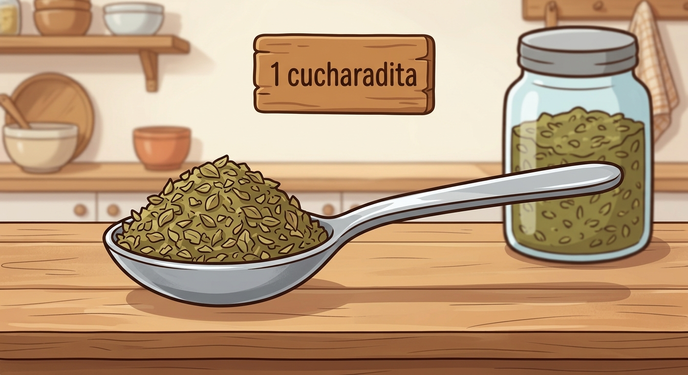
1 cucharadita de orégano seco -
 250 g a 300 g de queso fresco, panela o queso regional (en cubos)
250 g a 300 g de queso fresco, panela o queso regional (en cubos) -
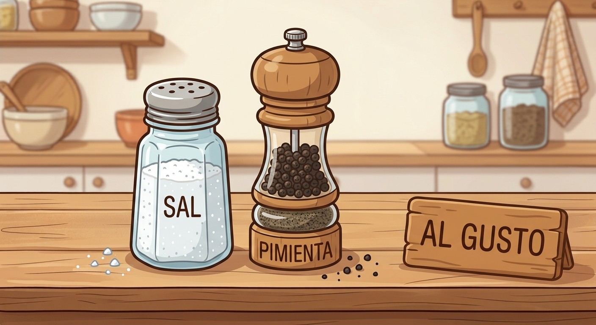
Sal y pimienta al gusto -
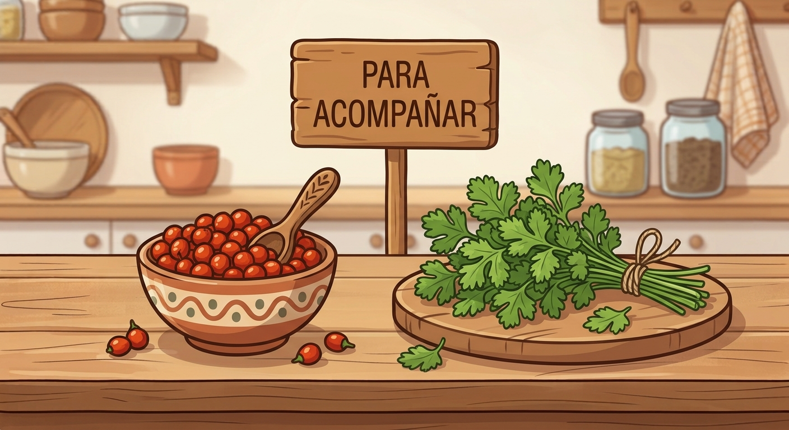
Cilantro fresco y chiltepín al gusto para acompañar
Preparación
- Tatemar los chiles: Asa los chiles poblanos o Anaheim directamente en la flama o en un comal hasta que la piel quede negrita. Ponlos en una bolsa de plástico o tápalos 10 minutos para que suden, pélales la piel, quítales las semillas y córtalos en rajas.
- Sofreír la base: En una olla grande, calienta el aceite y sofríe la cebolla con el ajo hasta que estén transparentes. Agrega el tomate picado y cocina por unos minutos hasta que suelte su jugo.
- Cocinar las papas: Añade los cubos de papa y las rajas de chile verde a la olla, revuelve y vierte el agua o el caldo de pollo/verduras.
- Sazonar: Agrega el orégano seco, sal y pimienta al gusto. Tapa y deja hervir a fuego medio-bajo durante unos 15 a 20 minutos, hasta que las papas estén suaves.
- Añadir la leche y el queso: Baja el fuego, incorpora la taza de leche y los cubos de queso fresco o panela. Deja que se calienten por 2 o 3 minutos sin que el queso se derrita por completo.
- Servir: Apaga el fuego, rectifica de sal, espolvorea cilantro fresco y acompaña con tortillas de maíz o harina y chile chiltepín.
Referencias
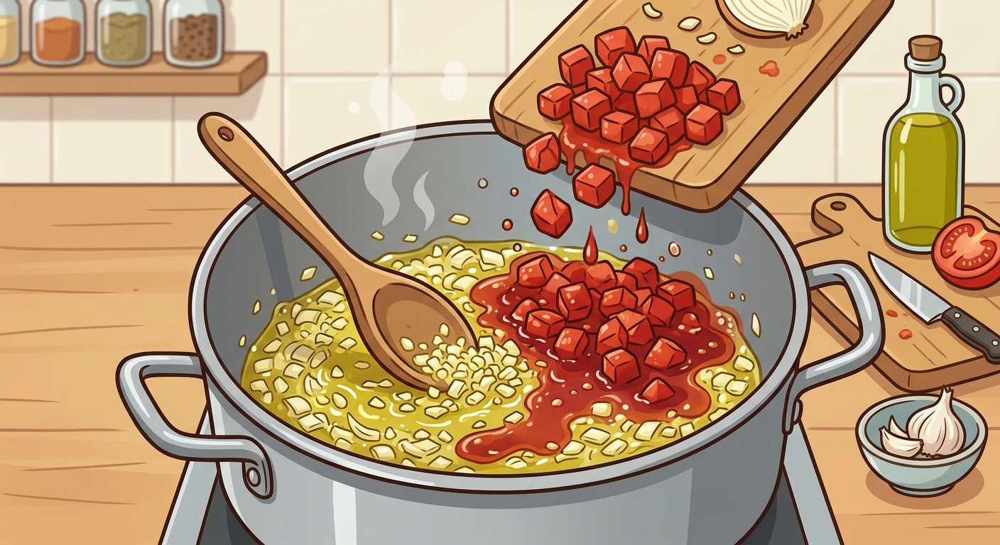
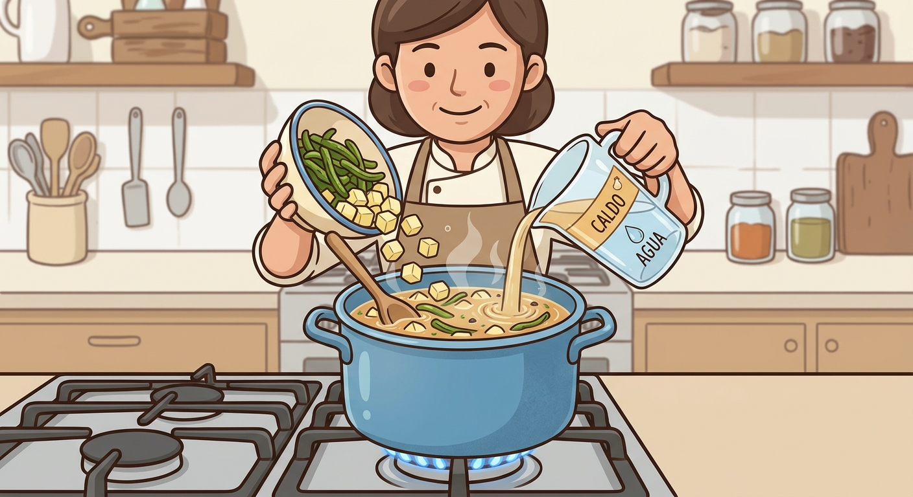
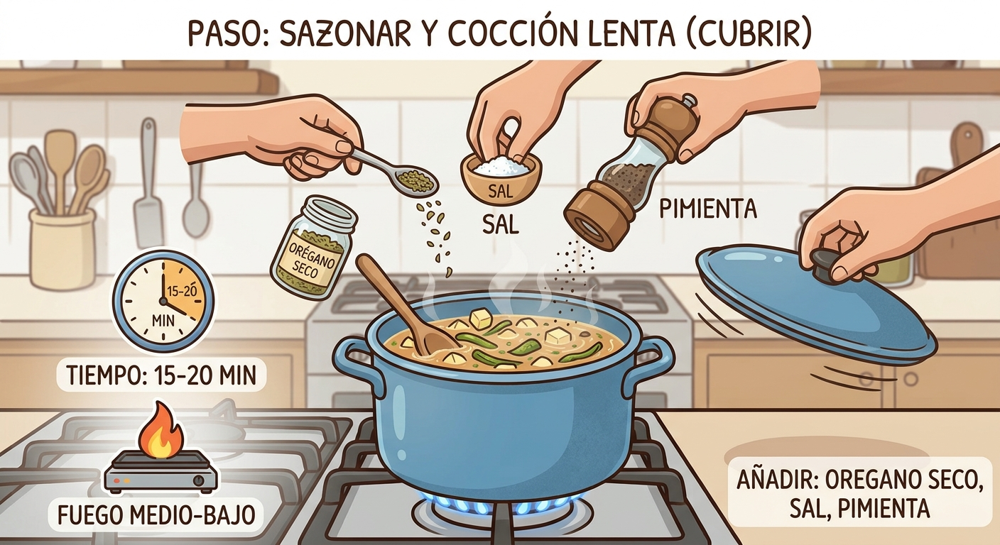
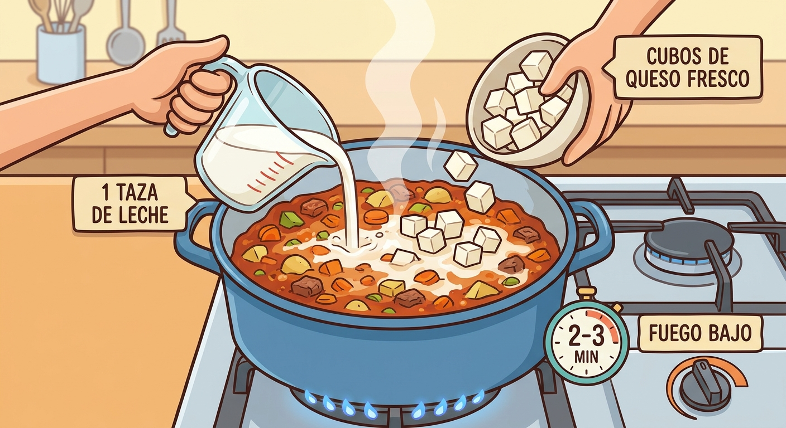
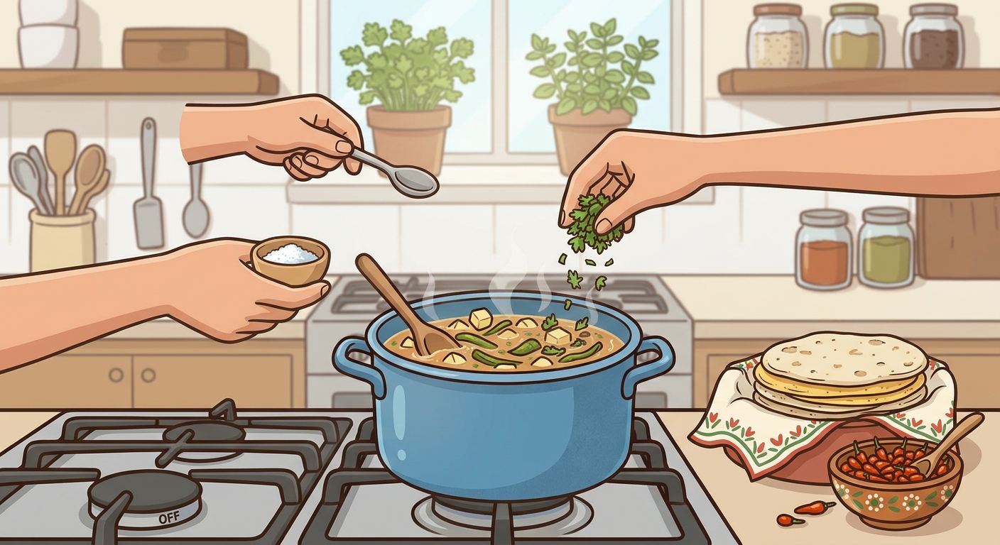